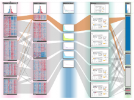
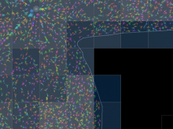
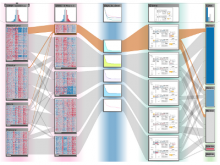
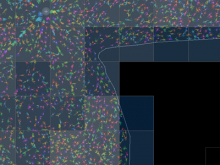

INCIDE the Brain of a Bee: Visualising Honeybee Brain Activity in Real Time by Semantic Segmentation
We present a software solution for processing recordings of honeybee brain activity in real time. In the honeybee brain, odors elicit spatio-temporal activity patterns that encode odor identity. These patterns of neural activity in units called glomeruli can be recorded by calcium imaging with fluorescent dyes, but so far glomerulus segmentation was only possible offline, making interactive experiments impossible. \ Our main contribution is an adaptive algorithm for image processing, along with a fast implementation for the graphics processing unit that enables semantic segmentation in real time. Semantics is based on the temporal dimension, relying on the fact that time series of pixels within a glomerulus are correlated. \ We evaluate our software on reference data, demonstrate applicability in a biological experiment, and provide free source code. This paves the way for interactive experiments where neural units can be selected online based on their past activity.
BioVis 2012 Information


 
